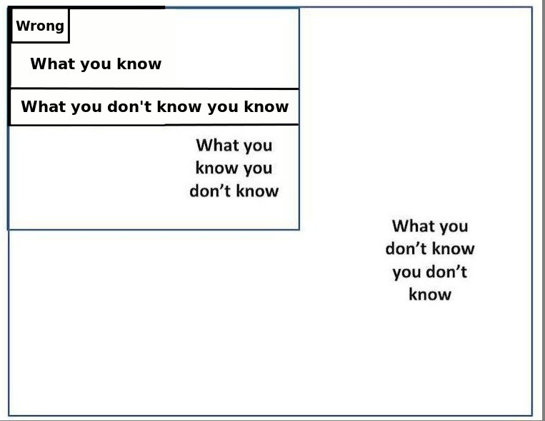
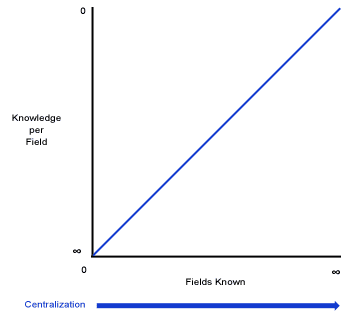

Falsifiability & Skepticism
Questioning What We Know
Disclaimer: I used generative AI to help write some sections on this page.
1. Unfalsifiable / Undecidable Propositions
1.1. What Is Unfalsifiability?
Unfalsifiability is a property where a claim, hypothesis, or theory cannot be contradicted by any possible observation or experiment. Unfalsifiable ideas cannot be proven false by any conceivable evidence, but they aren’t necessarily true. The philosophic burden of proof lies upon a person making empirically unfalsifiable claims, as opposed to shifting the burden of disproof to others.
Unfalsifiability does not make a claim false. It makes the claim untestable, so it cannot be supported or refuted by evidence. Karl Popper argued that theories which explain everything, like some readings of Freudian psychoanalysis or Marxist historicism, thereby explain nothing in a scientific sense.
“Falsifiability” is a useful term if we are having a scientific discussion. For example, someone could say “your claim is unfalsifiable, and thus meaningless”. However, unfalsifiable statements aren’t necessarily false. When possible, it’s better to be more specific and say something like “it has no explanatory power” or “no empirical content”. When we’re talking epistemology, falsifiability is not a very useful term, because we’re not taking truth, falsity, knowledge, reality, etc. for granted.
1.2. What Is Undecidable?
Undecidable claims can never be either proved or disproved (i.e., have its negation proved) on the basis of the axioms of the given theory. Undecidable claims are logically independent from the axioms of a given theory.
Since undecidable claims cannot be disproven, they are unfalsifiable by definition. Undecidable claims are a type of unfalsifiable claim, distinct from tautologies, baseless unfalsifiables, and claims beyond subjectivity.
“Undecidable” should not be thought of as a “truth value” in the way “true” and “false” are. Rather, there is a class of truth values which are not “true” or “false”, all of which are called undecidable. All true statements are equivalent, all false statements are equivalent, but not all undecidable statements are equivalent to each other. A conjecture is undecidable, relative to some formal system, if neither it or its negation can be proven within that system.
1.3. Are Tautologies Unfalsifiable?
A tautology is a statement that is true in every possible interpretation.
Yes, tautologies are unfalsifiable in the Popperian sense. A tautology is true in every possible situation, so no conceivable observation could contradict it. It forbids nothing, which means it has no empirical content and cannot be tested.
The same property that makes a tautology unfalsifiable makes it unfalsifiable in the trivial direction only: it is necessarily true, not immune to criticism for being unsupported. Falsifiability is a criterion for empirical claims, and tautologies are not empirical claims. They are true by logical form (e.g., “either it rains or it does not rain”), so the question of falsification does not apply to them in the way it applies to a scientific hypothesis.
A related problem arises when a claim is presented as empirical but is in practice a tautology, such as “survival of the fittest” if “fittest” is defined only as “whatever survives”. Then the claim looks informative but is unfalsifiable for the same reason, and critics of such claims object to exactly this.
1.4. Types Of Unfalsifiable Claims
- Tautologies: True by logical form, and thus impossible to prove false.
- Mathematically Undecidable: Mathematically proven to be impossible to prove or disprove.
- Claims Beyond Subjectivity: Possible, but cannot be evaluated, due to subjectivity.
- Baseless Unfalsifiable: No evidence available for proving. While these claims are technically classified as “unfalsifiable”, I evaluate them as false anyway.
2. Why Unfalsifiability Is Problematic
2.1. What’s Wrong With Unfalsifiable Claims?
Nothing is wrong with them logically; they can be true. The problems are epistemic and practical:
- No way to test them. Since no observation could count against the claim, evidence cannot support it either. Confirmation is cheap when disconfirmation is impossible.
- Immunization from criticism. Ad hoc rescues (“skeptics block the effect”) let a belief survive any outcome, which makes it impossible to correct if wrong.
- No informational content. A claim that forbids no state of affairs tells you nothing about which world you are in. It cannot guide prediction or action.
- Unlimited proliferation. Any such claim can be invented at will, so accepting them requires accepting arbitrarily many with equal justification.
- No basis for choosing between rivals. Contradictory unfalsifiable claims (an invisible dragon vs an invisible unicorn) are equally immune to evidence, so nothing favors one over the other.
- Unfit for science. Science progresses by eliminating hypotheses through failed tests. Unfalsifiable claims cannot be eliminated, so they contribute nothing to that process.
Unfalsifiable does not mean meaningless or worthless in every domain. Mathematical and some philosophical claims are not tested empirically. The objection applies specifically to claims that present themselves as empirical.
2.2. What Is The Rationale Behind Saying “Science Cannot Prove A Negative”?
The phrase is actually a popular misconception. Science can prove negatives. But the rationale behind the saying is worth unpacking.
What people usually mean: The intuition comes from the asymmetry of falsification. To confirm “X exists,” you need one observation. To confirm “X does not exist anywhere,” you’d theoretically need to check everywhere, an infinite or impractical search space. You can never rule out that the evidence is just hiding.
This asymmetry is real and useful in some cases. You can’t prove there are no black swans by only checking Europe. But you can prove there are black swans by finding one in Australia.
However, the saying is technically wrong. Science proves negatives routinely:
- There is no largest prime number (proven mathematically, which underlies scientific reasoning).
- Phlogiston does not exist.
- No perpetual motion machine can exceed thermodynamic limits.
- There is no planet between Mercury and the Sun (we’d have detected it).
These are all negative claims established with high confidence. The key is that a bounded or constrained claim is very provable. It’s unbounded existential claims that are the problem.
The real, more precise principle is: you cannot prove the absence of something from the mere absence of evidence, especially when your search is incomplete. If you haven’t looked everywhere, not finding something doesn’t mean it isn’t there.
This matters most in debates where someone demands you “prove” their unfalsifiable claim is false. They may ask you to prove there’s no god, no invisible dragon in the garage, no undetectable ether. The burden of proof should sit with the positive claim, not with those who haven’t refuted it.
So, the saying is a shorthand for that burden-of-proof principle. It’s philosophically sloppy when interpreted as a literal statement.
2.3. Evidence Is Always Needed For Possibilities
In Randian Objectivism, Ayn Rand reserved the word “arbitrary” for referring to things for which there is no evidence in believing perceptually or conceptually. Arbitrary claims are not based on either direct observation nor any kind of theoretical argument. An arbitrary idea is a sheer assertion with no attempt to validate it or connect it to reality. Holding arbitrary ideas is just as bad as holding false ideas, because the mind has corrupted its means of objectively identifying ideas in reality and abandoned its mechanism to correct errors. The severity of how bad it is to hold arbitrary ideas depends on the extent to which an individual allows those arbitrary notions to pervade their mind.
In the typology of unfalsifiable claims that I proposed, “arbitrary” claims can be either baseless falsifiable or beyond subjectivity.
Arbitrary beliefs highlight the importance that we add a critical requirement to our epistemological framework. In order for any idea to be deemed “possible”, it must have at least some evidence to back it up. Every possible concept must have at least some evidence to support it as a possibility.
Arbitrary statements should be treated as if nothing had been said. It’s not possible to make true, meaningful statements if those assertions were made without supporting evidence. A complete lack of evidence is always epistemically sufficient for deeming a proposition to be false. A complete lack of evidence fulfills the burden of proof for the people who vouch for a proposition’s falseness.
When deciding whether something is true or false, the Null Hypothesis is the default conclusion, unless there is evidence to prove otherwise (the Alternative Hypothesis).
2.4. The Burden of Proof
The burden of proof belongs to everybody who cares to prove what they believe to be true.
Yes, every debater always has the burden of explaining what they believe to be true and arguing why they are right. This is especially true when arguing over things in the Abyss.
For example, when I first saw the r/Antinatalism subreddit, I noticed that a lot of a antinatalists claimed that the burden of proof was on the natalists. At the time, I thought that argument could’ve been true, since I lacked the necessary knowledge for critiquing it. After I stared into the Abyss, I decided that both sides have the burden of proof. Antinatalism and natalism are both just value judgments. They both sit in the Abyss, equally. Neither judgment is objectively better than the other.
People who state unfalsifiable claims always have a greater burden of proof, since there are many problems with unfalsifiable statements.
3. Examples Of Unfalsifiable (Empirical) Claims
For this section, I tried my best to categorize a list of unfalsifiable claims into four categories that felt meaningful to me. I believe the claims in the second category are worth evaluating individually. I also believe that all the statements in the last two categories can be considered baseless unfalsifiable, since there is no evidence to support them. In any case, all these claims share one thing in common: They are unfalsifiable.
All the statements in the fourth category have the additional distinction of being composed of two or more logical propositions, rather than just one. This seems to suggest to me that motivated unfalsifiable statements of that nature cannot be written as a single logical proposition, unless there’s a counterexample(s) that I am unaware of.
3.1. Tautologies
- True definitions.
- Either it rains or it does not rain.
- The fittest organisms always survive and reproduce.
- Adam Lanza had every (legal) reason to lie, deny, and hide that he was a pedophile.
3.2. Interesting Unfalsifiable Claims
These are distinct claims that are actually worth addressing individually for understanding philosophy.
- All human actions are ultimately selfish.
Any apparent altruism can and should be reinterpreted as serving the self.
- This statement is true regarding psychological selfishness, given that psychological altruism is impossible by the nature of psychology.
- However, this statement is false regarding the other types of selfishness. There are demonstrable examples of humans who have done biological altruism and/or energetic altruism, even though their actions were maladaptive.
- Cornucopianism vs Neo-Malthusianism.
- Rogue AI will pretend to be aligned until it is strong enough to defect.
- The free market always corrects itself; any failure shows the market was not truly free.
- We live in a simulation, we are all brains in vats or jars, etc.
- Some unobserved realm or parallel universe exists that cannot interact with ours.
- Everything happens for a reason, even when no reason can be found. – I suppose this statement could be true, if it’s understood to say that everything is pre-determined to happen.
3.3. Made-Up/Supernatural Claims And Claims Outside Subjectivity
These claims propose things that are technically outside our subjectivity. But they are still baseless unfalsifiable, since there is no reason or evidence to believe them. Some of them also the problem of using undefined or ambiguous concepts, like “god” or “evil”.
- Russell’s Teapot: a china teapot orbits the Sun between Earth and Mars, too small for any telescope to detect.
- The universe was created five minutes ago with all memories and evidence of an older past already in place.
- A god exists who intervenes only in ways indistinguishable from natural events.
- Any good outcome is simply a test or a disguised blessing against evil.
- An undetectable invisible dragon lives in my garage.
3.4. Claims That Try To Prove Something
These claims each try to prove something, often for one’s own self-benefit or motivated/biased reasoning.
- Those who deny the conspiracy are part of it, and a lack of evidence shows how well it is hidden.
- The theory is confirmed if the patient improves and also confirmed if the patient does not improve (e.g., “resistance” in some psychoanalytic interpretations).
- The prophecy is correct, and any failure of it to occur means it was misinterpreted.
- Psychic powers exist but vanish whenever skeptics are present.
- This lucky charm works, and any time it fails, the user must not have believed enough.
Conspiracy theories and false flag theories should always be dismissed if there’s no evidence to support them. Not because there are no conspiracies, but because conspiracy theories are usually bogus. Conspiracy Theories are almost always an excuse not to think because the conspiracy allows you to have a really bad explanation, and then just cover up the flaws in your explanation by saying: “Well they’re hiding it from us”.
4. Skepticism & Probability
4.1. The Definitions of Skepticism And Certainty
There are at least two different definitions of certainty:
- Certainty in the sense of probability (impossible to certain, false to true).
- Certainty in the sense of what is unknown (what we are skeptical of) and what is certain (what we are sure of beyond a reasonable doubt).
Skepticism may be defined as:
- Questioning and/or doubt. The opposite of certainty.
- Habitual questioning and/or doubt, perhaps towards everything. This is usually what skepticism means in philosophy, and it could be distinguished by being called “philosophical skepticism”.
4.2. The Impossible-to-Certain Continuum
The Impossible-Certain Continuum: Impossible, Possible, Probable, Certain.
Question: True, False, Maybe are equivalent to Certain, Impossible, and Unknown/Possible, right?
All knowledge that we acquire within our lifetimes is based on observations by our senses, the concepts we form, and the extent to which we can infer things with logic.
Each of the levels of certainty: impossible, unknown, possible, likely, and certain respectively correspond to deductive, not enough information, some evidence, ampliative evidence, and deductive evidence. Greater evidence correlates with greater certainty, lack of evidence correlates with greater skepticism.
4.3. The Skepticism-Certainty Continuum
The range of skepticism to certainty regarding a proposition’s truth value is the probability of some proposition’s truth value. Skepticism exists on a spectrum, just like how certainty, confidence, and possibility also exist on spectrums. Discretely, we can define the Skepticism-Certainty Continuum with the following terms: Total Skepticism / Unknown / Imaginary, Possible, Probable, Certain.
Note: The spectrum scales for probability and skepticism/certainty seem to blend together, especially in cases where one of the scales would not exist or would seem rather redundant.
“I would rather have questions that can’t be answered than answers that can’t be questioned” – Richard Feynman
Rational Vs Rationalized
- Rationalizing means that you are using reason to validate an action that was already unreasonable to begin with.
- Skepticism is important in order to avoid rationalizing unreasonable beliefs.
4.4. Stating Propositions With Attributes
Template I For Stating Propositions With These Attributes:
- I am skeptical/./certain that:
- Proposition P/Q/R/S/etc is: true/false/unknown/etc.
- Because: [list reason(s) here].
- Proposition P/Q/R/S/etc is: true/false/unknown/etc.
Template II For Stating Propositions With These Attributes:
- The Probability (0.00 ≤ p ≤ 1.00) of:
- Proposition P/Q/R/S/etc is: true/false/unknown/etc.
- Because: [list reason(s) here].
- Proposition P/Q/R/S/etc is: true/false/unknown/etc.
Template III For Stating Propositions With These Attributes:
- I am skeptical/./certain that:
- The Probability (0.00 ≤ p ≤ 1.00) of:
- Proposition P/Q/R/S/etc is: true/false/unknown/etc.
- Because: [list reason(s) here].
- Proposition P/Q/R/S/etc is: true/false/unknown/etc.
- The Probability (0.00 ≤ p ≤ 1.00) of:
There is a difference between what can be inferred and what is shown to happen.
- Technically, inferred events don’t count as evidence.
- Evidence can only consist of stuff that has concretely already happened.
To make up for the lack of evidentials, we could invent a new terminology to distinguish between evidence, implications, and different things.
4.5. What We Don’t Know
Implicit in every scientific discovery and knowledge claim we ever make should be the words: “According to all available evidence and knowledge, this is the correct conclusion”. If you think this way, then you will welcome new findings and discoveries as a way to expand your knowledge, not as a threat to your current thoughts and dogmas. Yes, we can still be proven wrong, but we can also acknowledge this when it happens and change our beliefs to stop being wrong.
 |
 |
Awareness-Understanding Matrix
| Aware | Not Aware | |
| Understand | Known Knowns: Things we are aware of and understand | Unknown Knowns: Things we are not aware of but do understand or know implicitly |
| Don’t Understand | Known Unknowns: Things we are aware of but don’t understand | Unknown Unknowns: Things we are neither aware of nor understand |
5. When Skepticism Tends To Be Beneficial
The less someone knows about the world, the more rational it is to be skeptical about everything. Skepticism becomes less useful when you have a large abundance of accurate knowledge about the world.
That being said, it is easy to see why skepticism had a fair amount of popularity as a movement in Ancient Greece. The Greeks knew very little about the world compared to what humanity knows today, and many of the Greeks beliefs were later proven to be incorrect (e.g. their polytheistic religion, creationism, they believed the world was made out of earth, fire, water, air, and aether). Additionally, elementary algebra, calculus, and many other mathematical fields were not discovered yet, and lots of other knowledge wasn’t known either).